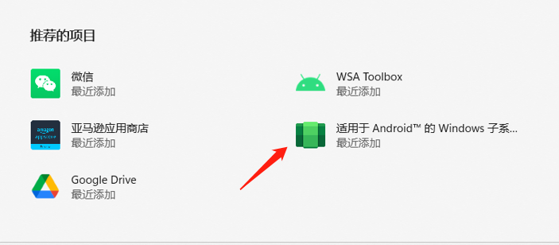
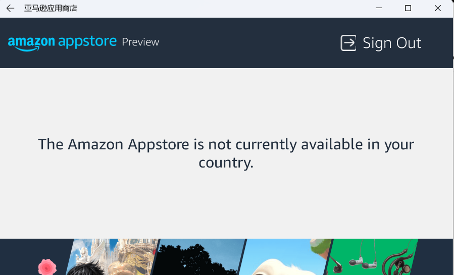
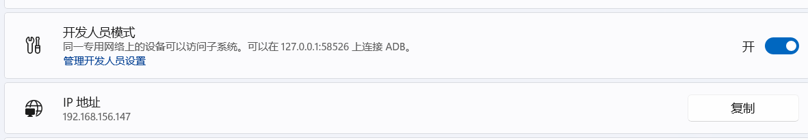
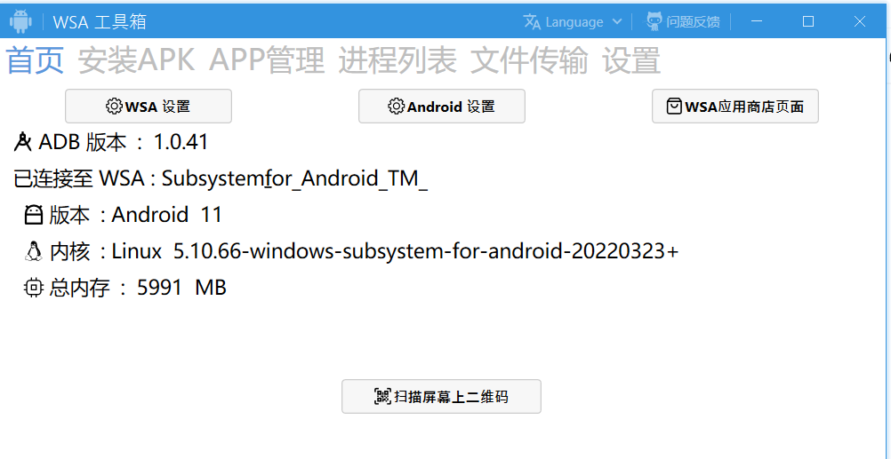

适用于 Android™️ 的 Windows 子系统（WSA）使你的 Windows 11 设备能够运行 Amazon Appstore 中提供的 Android 应用程序。由于WSA使用的Amazon Appstore版本提供的应用数量较少，应用限制较多，且不能自由安装其他Android 应用程序，此时我们能通过ADB调试功能，通过命令或WSA工具箱实现自由度更高的安装其他Android 应用程序，和对 Android 子系统的管理。
截止目前（2022年5月8号）， WSA依然仅在内部版本和预览版本（美国区）开放，据提情况可参考官网发行说明。所以，若您是一名Android 技术开发工程师，您可以参考博客提前体验熟悉；若您是一名普通的电脑用户，想体验在Windows 11设备安装Android应用程序，建议您等待更稳定的正式版本，或者建议您安装其他模拟器。比如最早的Bluestacks以及目前比较多人用的夜神安卓模拟器、逍遥安卓模拟器等。相信这些第三方模拟器不比当前Windows 11系统下Android子系统差。
若您仍然想要安装WSA体验，那么就一起开始吧。
环境安装
环境配置
首先查看系统配置需求：
| RAM | 8 GB （minimum） 16 GB （recommended） |
|---|---|
| Storage type | Solid State Drive (SSD) |
| Processor | Intel Core i3 8th Gen（minimum） or aboveAMD Ryzen 3000（minimum） or aboveQualcomm Snapdragon 8c（minimum） or above |
| Processor architecture | x64 or ARM64 |
| Virtual Machine Platform | This setting needs to be enabled. For more info, go to Enable virtualization on Windows 11 PCs. |
配置要求前四项是硬件需求。最后一项需要开启系统虚拟平台，查看超链接可看到官方提醒：许多Windows 10电脑以及预安装有 Windows 11 的所有电脑都已启用虚拟化，因此可能不需要执行这些步骤。
此时我们可以前往系统设置界面，依次选择“应用” -> “可选功能” -> “更多 Windows 功能” -> 勾选 “Hyper-V” 和 “虚拟机平台”，确定重启系统即可启用功能。
开启时，我发现win11家庭版的电脑会默认隐藏Hyper-V功能，此时我们可以通过管理员指令开启：
在桌面空白处，选择新建一个“文本文档”，命名为“hyper-v.cmd”，注意后缀不是txt。然后使用记事本打开，输入以下内容：
pushd "%~dp0"
dir /b %SystemRoot%\servicing\Packages\*Hyper-V*.mum >hyper-v.txt
for /f %%i in ('findstr /i . hyper-v.txt 2^>nul') do dism /online /norestart /add-package:"%SystemRoot%\servicing\Packages\%%i"
del hyper-v.txt
Dism /online /enable-feature /featurename:Microsoft-Hyper-V-All /LimitAccess /ALL
保存后，右键选在该文件，选择“以管理员身份运行”，等待脚本执行完成后，输入Y重启电脑。电脑启动后，重新选择“应用” -> “可选功能” -> “更多 Windows 功能”，此时可以看到已经存在“Hyper-V”并且已被勾选。
环境安装
直接安装
因为当前WSA依然仅在内部版本和预览版本（美国区）开放，所以使用Microsoft Store 安装Amazon Appstore时，需要将电脑地区、语言修改为英语、美国。方法为：依次选择“时间和语言” -> “语言和区域” -> “添加首选语言”、“修改国家或地区”。首选语言将中文替换成英语。
安装 Amazon Appstore，我们需要从 Microsoft Store 安装它。 点击连接打开应用页面获取安装：获取 Amazon Appstore 。安装完成后，Amazon Appstore 和WSA应用程序将出现在“开始”菜单和您的应用程序列表中。
准备就绪后，打开 Amazon Appstore 并使用您的 Amazon 帐户登录。
如果能直接通过Microsoft Store安装，就可以直接体验功能了。
注意：该方式不一定适合您的电脑，我测试发现Microsoft Store提示： The Amazon Appstore is not currently available in your country，无论如何设置、重启都不行。此时可以参考第二种方式，使用离线安装包直接安装的方式。
离线包安装
打开应用商城的应用解析网站：https://store.rg-adguard.net/，通过该网站可以解析出来Amazon Appstore的安装包，并且提供下载地址。打开网站后，我们发现主页是一个类似于搜索引擎的界面，总共有四部分内容：左侧列表、中间输入框，右侧列表，最后一个对号按钮。
左边的列表包含了 URL、ProductId、PackageFamilyName 和 CategoryId。表示要搜索内容的来源类型，我们最长获取到的都是 URL，所以Amazon Appstore会以 URL 为例来获取安装包。
右边的列表是指你需要哪个通道的包，其中包含了一下几个选项：
- Fast：指Windows Insider Fast 通道应用。属于比较激进的预览包。
- Slow：指Windows Insider Slow 通道应用。相对 Fast 没有那么激进的预览包。
- RP：指Release Review通道应用。也就是发布预览的包。该通道是相对较稳定的版本，RP 过后就会转为正式发布。
- Retail：指正式发布的包，也是系统默认的等级。
由于当前Amazon Appstore尚在内部版本与预览版本发布，所以我们选择RP或者Slow渠道。
然后在输入框输入 https://www.microsoft.com/store/productid/9p3395vx91nr，点击对号按钮进行搜索。
最下方找到 MicrosoftCorporationII.WindowsSubsystemForAndroid_2203.40000.3.0_neutral_~_8wekyb3d8bbwe.msixbundle，版本可能不一样，扩展名为msixbundle。然后点击对应的条目进行下载。
下载完成后，我们同时点击 win+x键，选择 Windows 终端（管理员）。
在控制台下输入： Add-AppPackage msixbundle下载路径，比如： Add-AppPackage C:\Users\Administrator\Downloads\xx.msixbundle。
等待运行结束，此时我们到开始菜单会发现多了一个应用程序：适用于 Android™️ 的 Windows 子系统设置。至此子系统安装完成了。

子系统配置
安装完成后，我们可以打开 适用于 Android™️ 的 Windows 子系统设置，发现是个设置页面，并不是一个常见的Android操作系统界面。
此时我们点击第一个条目 文件右上角的箭头，熟悉Android系统的朋友可能发现了，打开的就是Android系统的文件管理器。
可能会有很多人奇怪，我们安装的Android子系统在哪呢？原来这是WSA系统的特点，将Android模拟器与Win 11系统深度融合了，所以我们没办法再看到普通的Android系统桌面、系统应用等。
但当我们安装某一个Android应用程序时，WSA会自动将Android应用程序图标创建到开始界面，点击应用程序图标可以直接打开Android应用程序。
这对于习惯了Android系统的用户来说可能会有不适，并且发现我们安装的Android应用程序与Windows应用程序混合在一起很难分辨，比如Windows版微信与Android版微信。
调试环境配置
若您是通过离线方式安装的WSA系统和亚马逊应用商店，此时点击亚马逊应用商店，会发现应用商店无法使用：

此时我们无法安装任何应用，怎么办呢？
此时就需要配置调试环境了。
我们打开 适用于 Android™️ 的 Windows 子系统设置，开启开发人员模式，然后点击管理开发人员设置，点开后直接退出。刷新IP地址按钮会显示正确的地址。

接下来我们有两种方式安装管理应用：
- 通过ADB命令
我们打开谷歌开发者网站进行ADB调试环境下载： Android 调试桥 （adb）
在页面中找到 下载适用于 Windows 的 SDK Platform-Tools 按钮 ，在弹出的选项中滑到最下方，勾上选框 我已阅读并同意上述条款及条件然后点击第二个按钮即可下载Platform-Tools。下载完后，我们解压一下这个文件，然后复制一下解压后文件的路径，例如： C:\Users\Administrator\Downloads\platform-tools,接下来我们可以通过ADB命令进行应用管理了。
- 通过WSA 工具箱
WSA 工具箱是makazeu开发的一款实用工具，可以对 WSA 子系统进行高级管理，比如查看子系统进程、安装/卸载 APK 应用、传输文件等。
点击链接可直接通过Microsoft Store 安装它，安装完成后打开应用可以看到相关操作，很简单不阐述使用方法了。

应用安装
我们可以通过ADB命令或WSA 工具箱安装应用，我发现当前WSA稳定性仍然很差。安装了几个应用（Chrome、酷安）都会自动退出。
最后安装了微信发现可以使用，但微信会和手机端相互顶掉。此时我们可以通过adb调试，把density调到600，此时微信启动时会检测当前设备为平板，会提示用户可以配置成和手机同时登录微信。就可以手机、电脑、WSA三端共存了。
- 配置屏幕方法：
通过win+x，打开终端。首先连接ADB， 127.0.0.1:58526参考 适用于 Android™️ 的 Windows 子系统设置中分配的地址。
PS C:\Users\Administrator> adb connect 127.0.0.1:58526
already connected to 127.0.0.1:58526
输入 adb shell wm density 600，回车没有任何输出，此时启动微信，会将WSA识别为平板。此时正常使用WSA版本微信吧。